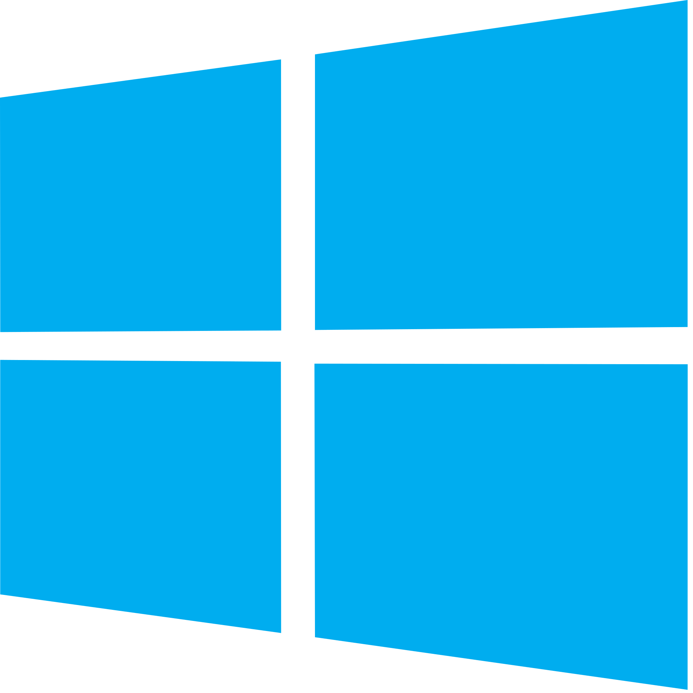

When you sign up for an account on a social media site, the site usually asks you for some information about yourself, such as your full name, your gender, your birthdate, and sometimes your place of residence. Keeping this data private is vital - as there are many ways other people can access this data.
If someone gets ahold of your personal information, you could be subject to identity theft. Identity theft is an act where someone masquerades as you, even though they’re not you. Additionally, some pieces of information (such as bank details, addresses and social security numbers) are very sensitive - and if someone accesses these pieces of information, they could potentially do very bad things to your accounts and credentials.
When you click the I ACCEPT button on a website, you subsequently agree to a few terms which you may or may not have read. For many websites, this means that you agree to the use of cookies.
Cookies are basic bits of information about you. This could include your computer’s model and type, your username and password, what sites you’ve visited, what videos you’ve watched, and what links you’ve clicked. This data could be used for many purposes, such as research and advertising purposes. Below are some of the more well-known sites that collect your data.
Have you seen an ad that looks like something you’ve visited a few minutes ago? Google tracks your searches and looks for advertisers that have products which might fit your recent searches. If you have a Google account, Google also stores your name, your birthdate, your phone number, and IP addresses and browsers where you use Google.

Similarly to Google, Facebook also tracks your searches and your location. Additionally, it tracks the posts you’ve reacted to (positively or negatively), the comments you post, and the videos you watch. Facebook also tracks you through the embedded the Facebook sharing and comment system on some sites.

When you use Windows, you allow Microsoft to record data such as your computer model, data relating to any errors or blue screens, web searches (if you use Bing), locations, searches and contacts (if you use Cortana), and information from input devices (such as keyboards, microphones, built-in cameras and fingerprint sensors).

 HOME
GOFUNDME
HOME
GOFUNDME